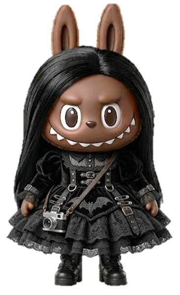

Santuario de Sombras
Un grimorio elegante de bestias, magia y reliquias ocultas.
Un grimorio elegante de bestias, magia y reliquias ocultas.
Toca los sellos para revelar los secretos del santuario.
Texto secreto

Has abierto los cuatro sellos. El santuario te reconoce como visitante de la noche.